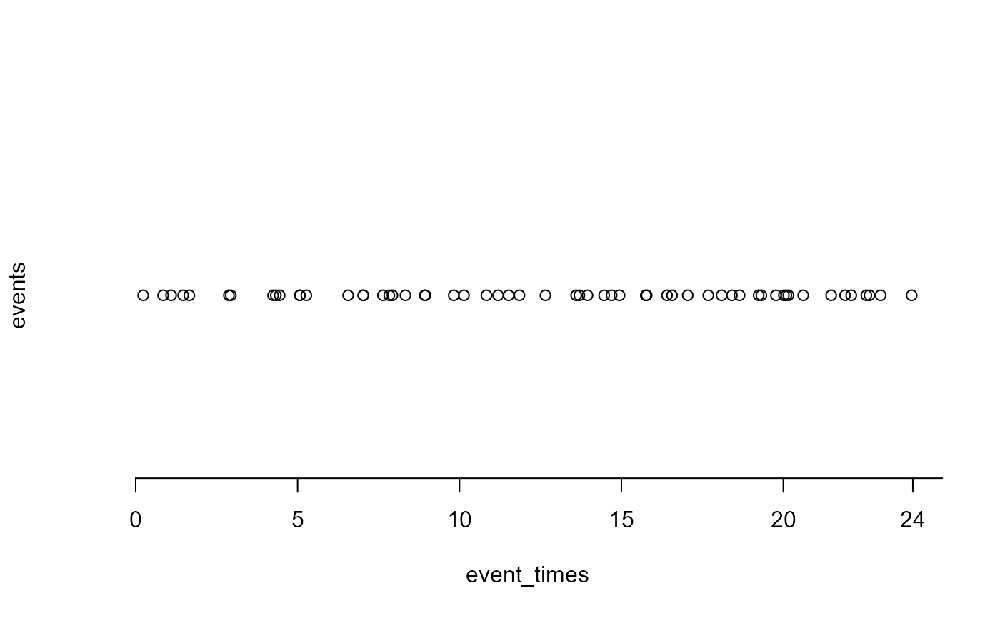
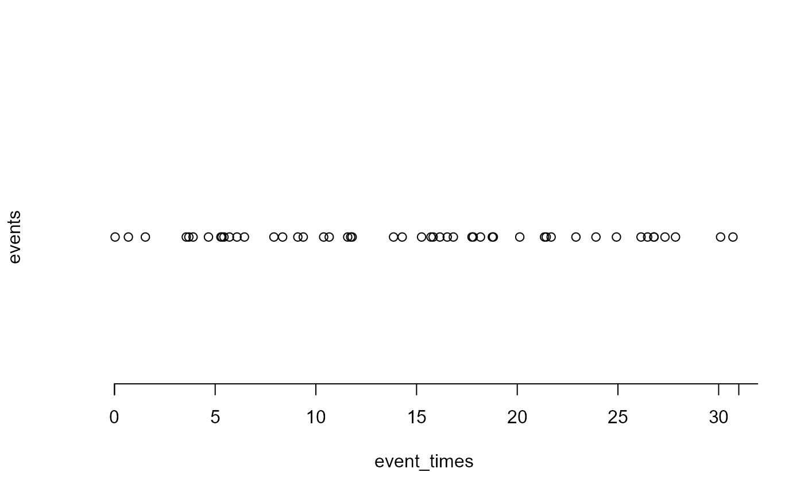

Simulates event times from a (one-dimensional, homogeneous) Poisson process
of rate \(\lambda\) per hour. The user has the options to simulate events
over a fixed time period of hours hours or to simulate a fixed number
n_events of events.
Usage
poisson_process_sim(lambda = 1, hours = 24, n_events = NULL)
Arguments
- lambda
A positive numeric scalar. The rate of the Poisson process.
- hours
A positive integer scalar. The number of hours for which to
simulate a Poisson process of rate \(\lambda\) events per hour.
- n_events
A positive integer scalar. The number of events to
simulate.
Value
A numeric vector containing the (ordered, smallest to largest)
times at which the events occur. The returned object has class
"poisson_process".
Details
If n_events is supplied then exactly n_events are
simulated and hours has no effect. If n_events is not
supplied then events are simulated over the time interval
(0, hours). If no events occur in (0, hours) then
the value \(-1\) is returned.
Examples
sim1 <- poisson_process_sim(lambda = 2, hours = 24)
plot(sim1)

sim2 <- poisson_process_sim(lambda = 2, n_events = 50)
plot(sim2)
